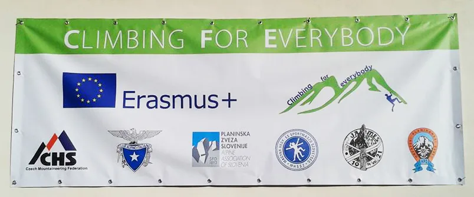

Nalijećem na grupu promatrača životinja koji za potreba parka obavljaju monitoring divljači. Čude se što sam bauljam Tatrima pogotovo kad sam im iznio svoj plan. Jedan od njih me upitao - Sve ćeš to proći na noge? Da, a…

Fotografija iz arhive starog weba SO Velebit
Piše: Stjepan Dubac
Foto: Stjepan Dubac & Internet
Tatarski medvjed kojeg nisam vidio, dva-tri alpska jarca i svizac koji je vikao na mene
Dobio sam priliku pridružiti se hrvatskom timu s kojim sam od 18. do 24. lipnja 2017. boravio na Tjednu planinarenja i penjanja u Visokim Tatrima. Događaj je organiziran u sklopu projekta „Penjanje za sve“ kojeg provodi šest nacionalnih planinarskih saveza (češki, slovački, mađarski, talijanski, slovenski i hrvatski), a sufinancira ga EU preko Erasmus plus programa.
[caption id="attachment_1033" align="alignnone" width="804"] Erasmus plus program[/caption]
Iako nisam penjač za sudjelovanje u ovom projektu regrutiran sam ponajviše zbog interesa za rad s osobama s posebnim potrebama koje su zajedno s osobama treće životne dobi u fokusu interesa projekta. O samom projektu „Penjanje za sve“ možete se informirati na službenim web stranicama Hrvatskog planinarskog saveza.
U Slovačku putujemo dan ranije, točnije u subotu 17. lipnja i noćimo u mađarskoj metropoli Budimpešti kao gosti mađarskog tima. Dan kasnije, u nedjelju, zajedno s talijanskim i mađarskim timom nastavljamo putovanje sve do Nacionalnog parka Vysoke Tatry. Putujemo autobusom kojeg smo prozvali „zapinjača“ budući da je teškom mukom savladavao svaku uzbrdicu tako da smo umjesto očekivanih četiri putovali nešto više od šest sati.
[caption id="attachment_1037" align="alignnone" width="945"] Hrvatski tim na mađarski način (snimljeno u boulder dvorani Monkey u Budimpešti)[/caption]
Po dolasku na parkiralište pred ulazom u nacionalni park svoje stvari moramo prebaciti u vozilo od hotela jer dalje smiju samo vozila u vlasništvu hotela i planinarskih domova te vozila hitnih (spasilačkih) službi. Dok naše torbe i ruksaci elegantno putuju do hotela mi nastavljamo cipelcugom.
Po dolasku u hotel (Horsky hotel/Popradske pleso) slijedi uobičajeno: registracija kod organizatora i razmještaj po sobama. Odmah lovimo organizatore i obasipamo ih pitanjima tipa: gdje, kako, kada… Iako iznenađeni našom gladi za informacijama organizatori strpljivo odgovaraju na sva naša pitanja. Zasvirali su slovački muzikaši te razgalili naša srca i dušu svojim narodim pjesmama. Ja sam se s Darkom (Mršnik) i Slovencima dogovorio za sutrašnji juriš na prvi vrh u Tatrima, na Rysy.
Noć je brzo prošla i već smo na stazi za Rysy, ali samo Darko i ja jer se Janezi u dogovoreno vrijeme nisu pojavili. Startali smo koju minutu nakon pet. Jutro je ugodno i svježe s temperaturom od 4⁰C. Ispred nas preko staze pretrčavaju svizci i alpski jarci, a posvuda se prelijevaju planinski potoci koji se ulijevaju u jezera (pleso) u podnožju. Uspinjemo se do planinarskog doma pod Rysijem (2250 m), dalje put vodi preko strme zaleđene padine sve do sedla. Na sedlu skrećem desno jer je ispred mene provalija i ubrzo stojim na Rysyu (2499 m) službeno najvišem vrhu Poljske jer se sam vrh nalazi na slovačko-poljskoj granici.
[caption id="attachment_1042" align="alignright" width="250"] Velebitanga na Rysyu (2499 m)[/caption]
Kasnije istog dana opet ću se popeti na isti vrh ovaj put u društvu legendarnog Dade (Vladimir Mesarić). Za razliku od jutros putem do vrha mimoilazimo se s velikim brojem ljudi svih dobi, veličina, a vidjeli smo i jednog muškarca na štakama. S obzirom da je bio ponedjeljak pomislio sam da je nacionalni praznik, ali i narednih dana viđao sam na stazama veliki broj ljudi. Čak su i Slovenci bili impresionirani, a znamo da Janeze barem kad su planine u pitanju nije lako fascinirati.
[caption id="attachment_1049" align="alignleft" width="333"] Na samom vrhu je granični stupić i metalna kutija, ali nigdje nema natpisa naziva vrha.[/caption]
Jedan od razloga tolike posjećenosti svakako su dobro uređene i utabane staze. Često se hoda preko položenih velikih kamenih gromada tako da uspon ponekad nalikuje penjanju po velikim kamenim stepenicama. Hodanje po takvim stazama je prilično jednostavno i lagano. Sada mi je potpuno jasno zašto se Slovaci u naše, hrvatske, planine često upućuju samo u natikačama. Za razliku od njihovih staza i putova one na Velebitu i Biokovu su znatno divlje pa nije ni čudno da im se natikače odmah raspadnu. Ne mislim reći da su njihove staze bolje od naših, osobno meni se više sviđa naša divljina, međutim teren u Tatrima omogućio je takav stupanj uređenosti što u konačnosti utječe i na posjećenost.
Još prvog dana vidjeli smo i slovačke Sherpe, nosače koji opskrbljuju dom pod Rysijem. Teret prebacuju na leđima pomoću drvenih konstrukcija (naramaka), a nose po bačvu pive ili bocu plina. Rekli su nam da se svake godine održava natjecanje gdje 750 metara visinske razlike muški natjecatelji savladavaju s 60 kilograma tereta, a ženski s trideset. Nevjerojatno i zadivljujuće!
[caption id="attachment_1054" align="alignnone" width="1024"] Donja ili početna stanica slovačkih Sherpa. U drvenoj kućici su platnene vreće koje možete ponijeti do doma i nagraditi će vas čajem ili kavom.[/caption]
Ponedjeljak, 19.06.2017
Horsky hotel/Popradske pleso (1450 m) – Rysy (2499 m) – Popradske pleso.
Trajanje jedne ture: 4,20 minuta.
Novi dan – ambiciozan plan. Startam nešto ranije, u 04.30 sati. Vanjska temperatura iznosi 8⁰C. Krećem istom stazom kao i jučer, ali na raskrižju umjesto za Rysy skrećem lijevo prema Tri Studničky. Prolazim uz jezero Veliké i uspinjem se serpentinom do Vyršne Kaprovsko sedlo. Od sedla nastavljam dalje s usponom i uskoro dosežem svoj drugi vrh u Tatrima Kôprovský štít (2363 m). Kratko ostajem na vrhu i već se spuštam do sedla i dalje kroz Hlinsku dolinu kojom protječe Hlinsky potok. Staza na nekoliko mjesta presijeca potok pa skakućem s kamena na kamen nastojeći ne zagaziti u vodu ili žitko blato. Ne uspijevam i učas su moje gojzerice, a i noge mokre. No, nema predaje. Naprijed junaci!
[caption id="attachment_1059" align="alignleft" width="333"] Selfie na vrhu Kôprovský štít (2363 m).[/caption]
Nalijećem na grupu promatrača životinja koji za potreba parka obavljaju monitoring divljači. Čude se što sam bauljam Tatrima pogotovo kad sam im iznio svoj plan. Jedan od njih me upitao - Sve ćeš to proći na noge?
Da, a kako drugačije !?! - odgovaram i već jurim dalje niz dolinu. Spustio sam se do Kmetovog vodopada gdje zastajem na tren. Od hotela do vodopada trebalo mi je pet sati. Bacam oko na kartu i vidim da me očekuje još barem dva sata spuštanja do Tri Studnički i to po asfaltu i makadamu. A ne, ne… nisam došao u Tatre tabanat po blesavom asfaltu i odmah mijenjam prvobitni plan. Vraćam se nazad istim putem jer ne mogu drugačije, a uostalom svidjela mi se staza kroz Hlinsku dolinu. Prestiže me biciklist koji se s biciklom nastavio uspinjati istom stazom sve dokle je mogao. Potom je negdje u šumi sakrio svoj bicikleto i sada se hodajući uspinje zajedno sa mnom. Biciklist Rade je jedan je od rijetkih Slovaka s kojima sam tih dana komunicirao na engleskom bez zamuckivanja i zastajkivanja. Većina Slovaka, čak i veći dio zaposlenika u hotelu pa i neki sudionici u projektu jedva da znaju natucati nešto na engleskom. Niti moj engleski nije nešto, ali se barem mogu sporazumjeti.
Rade mi govori da je danas najtopliji dan u Tatrima od početka godine. Bogme se osjeti. Sunce nemilice tuče u glavu i sva sreća da su Tatri bogati vodom pa nema opasnosti od žeđi. Ponovno sam pred vrhom Kôprovský štít. Srećem Darka i Dadu, a na samom vrhu Alana (Račić). Uživamo u pogledu, razgovaramo potom se ja spuštam prema hotelu dok Alan produžuje dalje za Rysy.
[caption id="attachment_1068" align="alignnone" width="1980"] Pogled s vrha Kôprovský štít[/caption]
Navečer, u blagovaonici, iznosimo svoje dojmove i prepričavamo dogodovštine. Nakon večere predavanje pa na spavanac.
Utorak, 20.06.2017
Horsky hotel/Popradske pleso (1450 m) - Kôprovský štít (2363 m) – Hlinska dolina – Kmetov vodopad (1245 m) - Kôprovský štít - Popradske pleso.
Trajanje ture: 10 sati.
Srijeda ujutro rezervirana je za rad radnih grupa. Svi članovi hrvatskog tima moraju sudjelovati u radu neke radne grupe. Ona u kojoj sudjelujem bavi se osobama treće životne dobi i osobama s posebnim potrebama, a osim mene sudjeluju još Darko i Dado. Po prvi put se upoznajem sa ciljevima ove radne grupe. Razvila se diskusija, iznosimo svoja očekivanja i moguće teškoće te dobivamo zadatke koje moramo ostvariti do sljedećeg okupljanja u Paklenici (24. – 30.09.2017.). Vremena je malo, ali nećemo jadikovati!
[caption id="attachment_1075" align="alignright" width="250"] Na vrhu Tupá. U pozadini je jezero Popradske Pleso i hotel u kojem smo bili smješteni.[/caption]
Ostatak dana je slobodan te ga iskorištavam za šetnju do vrha Ostrova (1966 m). Staza vodi od hotela, strmo se uspinje serpentinom do sedla od kojeg do vrha dijeli samo nekoliko koraka. Od istog sedla nastavljam nemarkiranim putem prema vrhu Tupá (2214 m). Iako je put nemarkiran snalaženje nije problematično. Od vrha Tupá spuštam se do Tatarske magistrale i nastavljam do jezera Batizovske pleso potom i do luksuznog zdanja Horsky hotel/Slezky Dom. Hotel je smješten uz jezero Velicke pleso u kojeg se ulijeva voda iz Velicky Vodopada. S terase hotela lijep je pogled na dolinu i na grad Vysoke Tatry. Postoji staza koja vodi iznad jezera, ali na žalost nemam dovoljno vremena. Zato radim samo đir oko jezera i vraćam se nazad do hotela.
Srijeda, 21.06.2017
Horsky hotel/Popradske pleso (1450 m) – Ostrova (1966 m) - Tupá (2214 m) – Horsky hotel/Slezky Dom (1670 m) – Popradske pleso.
Trajanje ture: 7 sati.
Najava lošeg vremena za petak ujutro daje mi do znanja da je četvrtak možda posljednji lijep dan u Tatrima te ga valja dobro iskoristiti. Krećem u 05.30 sati, vanjska temperatura: 9⁰C. Spuštam se magistralom do Štrbske pleso (1345 m). Mjesto puno hotela i ljetnikovaca te podsjeća na Opatiju u doba Austro-Ugarske. Zaobilazim veliko jezero i nastavljam dalje sve do raskršća za vrh Krivan (2495 m). Na tabli stoji da do vrha ima 3,15 h. Hajde da vidimo koliko će meni trebati. Staza isprva vodi kroz šumu, a onda ona naglo nestaje i nastupa klekovina. Potom naglo prestaje klekovina i zamjenjuje ju kratak pojas planinske livadice s vrlo malo cvijeća. Uskoro krajolik postaje kamenit te puše snažan i hladan vjetar koji me ne pušta sve do samog vrha.
[caption id="attachment_1083" align="alignleft" width="333"] Na vrhu Krivan (2495 m)[/caption]
Osim mene na vrhu ima nekoliko ljudi. Doručkujem i uživam u pogledu. Ne zadržavam se dugo jer imam još dosta puta za proći. Spuštam se do raskršća te hvatam smjer prema Tri Studničky. Zastajem na jednom mjestu s namjerom da se uslikam s vrhom u pozadini kadli me prepadne snažan urlik. Okrećem se naokolo, gledam i iznad sebe, ali nigdje nikog. Onda na pet metara od sebe skužim malenog svizca koji se propeo ne stražnje šape i snažno viče na mene. Očito mu je brlog u blizini ili je ovo njegovo mjesto za randezvous.
[caption id="attachment_1094" align="alignright" width="333"] Pogled s vrha Krivan na dolinu i stazu kojom sam se popeo.[/caption]
– Dobro, dobro maleni, tepam mu, nemoj se srditi, idem ja….
Spuštanje do Tri Studničky potrajalo je dva sata. Ne znam što sam očekivao, možda tri jezera, tri vodopada ili možda tri djevuške. Ništa od toga. Tri Studničky su tri kuće i jedan izvor. Možda sam trebao pričekati da iz svake kuće izađe po jedna punašna slovačka djevojka, ali sunce mi je spržilo svaku želju pa sam se okrijepio vodom s izvora i nastavio dalje. Na ovom dijelu Tatarska magistrala nalikuje kolskom putu i nije mi zanimljiva. Sunce tuče, udara, hlada nigdje. Svi ljudi koje srećem spuštaju se,
[caption id="attachment_1100" align="alignleft" width="333"] Vrh Krivan i staza za Tri Studničky[/caption]
samo se ja uspinjem. Konačno ulazim u šumu i staza se pretvara u lijepu planinarska stazu. Prolazim uz jezero Jamske pleso te nastavljam sve do skretanja za Nižne i Vyšne Wahlenbergovo pleso. Ta kružna staza uspinje se do vrha Furkotsky štit (2403 m) i spušta do Štrbske pleso. Imam dovoljno vremena pa odlučujem poći tom stazom. Dosežem Vyšne Wahlenbergovo jezero i zastajem na tren. Ta već sam deset sati aktivan. Naslanjam se na poveći kameni blok, gledam vrh u daljini, promatram okoliš, sunce nemilice prži i tada shvatim da danas neću doseći vrh. Od kada sam krenuo na tu stazu koraci postaju sve teži i osjećam da mi je naglo splasnula snaga i volja. Računam da će mi do vrha trebati barem 45 minuta, a do naselja oko dva do tri sata. Ako se sada okrenem i krenem nazad u hotel trebati će mi dva do tri sata. Uh, iako uspon na Furkotsky štit nije bio u prvotnom planu ne volim odustajati od svog nauma. Pogotovo ne sad kad ga vidim ispred sebe. Glava želi naprijed, ali tijelo ne dozvoljava.
[caption id="attachment_1104" align="alignnone" width="1980"] Vyšne Wahlenbergovo pleso (2157 m). Desno je vrh Furkotsky štit (2403 m) na koji se nisam popeo.[/caption]
Okrećem se i spuštam do raskršća pa na lijevo za Chatu pod Soliskom. To je gornja stanica skijaške vučnice koja van sezone prevozi turiste i planinare iz i natrag u Štrbske pleso. Iznad stanice je i vrh Solisko do kojeg nema niti desetak minuta, ali bijah tako razbijen i deprimiran da mi je svega bilo dosta. Želio sam samo spustiti se do mjesta, negdje zastati i popiti pivu. Bilo mi je dosta hodanja i ove proklete vrućine.
Mogao sam se spustiti s vučnicom, ali nisam želio. Pekla me savjest što sam odustao od uspona na Furkotsky štit no što je tu je. Možda sutra, u nekom dijelu dana, bude lijepog vremena pa se vratim. Sada sam previše iscrpljen i izmožden. Spuštam se stazom uz vučnicu koja je zimi skijalište i ulazim u mjesto. Na jednom štandu kupujem i gotovo na eks ispijam pivu. Osvježen tim božanskim nektarom nastavljam dalje. Koračam kroz Štrbske pleso i tek tada dobivam uvid koliko u Tatri usmjereni i popularni na zimski turizam. Uključujem se na magistralu i stižem do hotela. Odmah odlazim pod tuš. Ostatak vremena provodim na terasi iščekujući dolazak svih ekipa. Stiže večera, slijedi još jedno predavanje i na kraju spavanac.
Četvrtak, 22.06.2017
Horsky hotel/Popradske pleso (1450 m) – Štrbske pleso (1345 m) - Krivan (2495 m ) – Tri Studničky – Batizovske pleso - Nižne i Vyšne (2157 m) Wahlenbergovo pleso – Chata pod Soliskom (1840 m) – Štrbske pleso – Popradske pleso
Petak je posljednji dan u Tatrima da se negdje promuva, ali ujutro je pala jaka kiša praćena grmljavinom. Ne volim kišu, ali danas mi je itekako dobro došla. Vraćam se nazad u krevet no crvi u guzici, grižnja savjesti ili pak nešto treće natjerali su me da ustanem i spustim se u blagovaonicu. Pomalo kapaju ostali i vidi se da smo svi izbijeni. Cijelo jutro se vučemo kao krepani. Vrijeme kratimo igrajući biljar, izležavajući se, razgovarajući o projektu i o koječemu drugom. U međuvremenu je kiša stala, razvedrilo se i iako sam namjeravao krenuti hodati tijelo je odlučno reklo: - Ne i nema rasprave. U 18 sati svi sudionici okupljaju se ispred hotela radi fotografiranja. Potom su voditelji radnih grupa predstavili ciljeve i zadatke svake pojedine grupe. Uslijedila je večera, a onda završna fešta. Zasvirao je slovački rock band, družilo se, pjevalo i plesalo sve do dva sata ujutro kad sam kapitulirao i povukao se na spavanje.
[caption id="attachment_1110" align="alignleft" width="376"] Svi sudionici Tjedna planinarenja i penjanja u Slovačkoj 2017.[/caption]
Subota je službeno naš posljednji dan u Tatrima i u Slovačkoj. Odlazimo isto onako kako smo i došli. Naše stvari vozikaju se do parkirališta, a mi pješice. Čeka nas naša stara zapinjača i isti vozač. Do Budimpešte putujemo drugim, sat vremena dužim, putem i stižemo taman pred polazak vlaka. Noć se odavna spustila kad smo prešli granicu te u Zagreb uplovljavamo u pola jedan u noći. Neki nastavljaju daljnje putovanje, a mene dočekuje moja bolja polovica kojoj sam gotovo do dva sata ujutro prepričavao svoje dogodovštine. A onda je moja ženica jasno rekla: - A sad je dost' Ajd spat! Što ćeš, ženicu se mora slušati. Liježem u krevet i prije nego mi glava dotakne jastuk padam u dubok san.
Kratki rezime boravka u Visokim Tatrima povodom Tjedna planinarenja i penjanja, Slovačka 2017.
Dosegnuti vrhovi: Rysy (2499 m), Kôprovský štít (2363 m), Ostrova (1966 m), Tupá (2214 m), Krivan (2495 m)
O projektu
Moram priznati da sam prije odlaska u Slovačku bio poprilično skeptičan u svezi radne skupine u kojoj sudjelujem. Osobe treće životne dobi, a pogotovo osobe s posebnim potrebama slojevita su skupina unutar svake populacije i započinjanje bilo kakvih aktivnosti zahtijeva dosta pripremnog gotovo studioznog rada. Iako sam ranije imao ideju za pokretanjem sličnog, doduše obujmom znatno manjeg, projekta mislim da je jako dobro da se ovim projektom bavimo u okviru organizacije kao što je Hrvatski planinarski savez. Teško je za sada prognozirati kako će se razvijati projekt i koje ćemo sve domene dosegnuti, ali kao i svaka takva aktivnost njena realizacija najviše ovisi o onima koji će doista i raditi u projektu. Neću sada iznositi što bi sve, po mom mišljenju, trebalo napraviti, ali neosporno je da nas očekuje mnogo posla.
O penjačima
Super ekipa, barem ova s kojom sam se imao prilike družiti. Budući da potječem iz speleoloških krugova mogu reći da su penjači pomalo nalik špiljarima. Svojevrsna avangarda, bitange modernog doba. Dakako u pozitivnom smislu i jedva čekam da se opet družimo.
[gallery ids="1110,1104,1100,1094,1083,1075,1037,1042,1049,1054,1059,1068,1033" type="rectangular"]